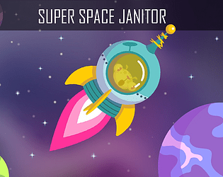
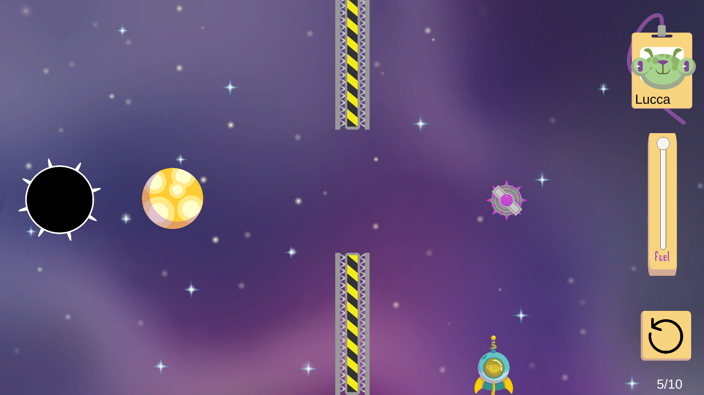
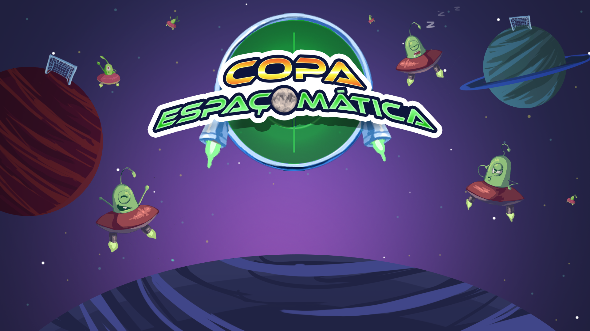
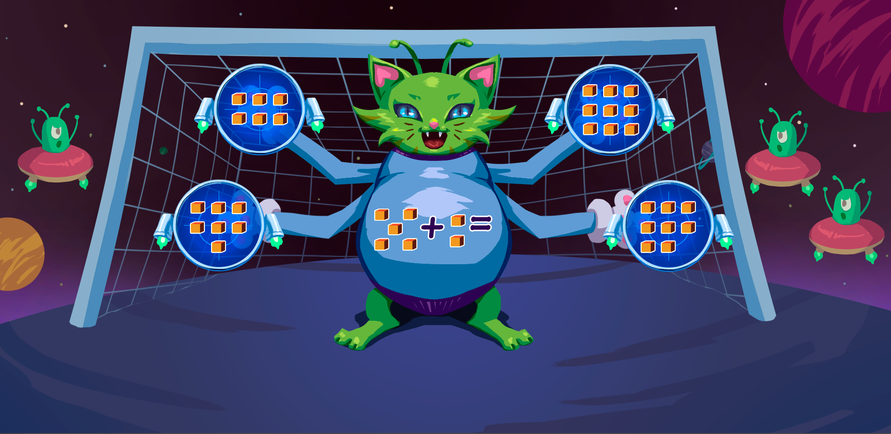
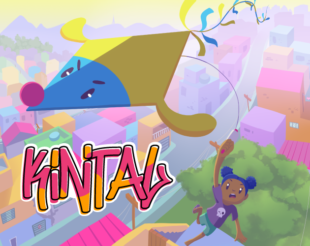
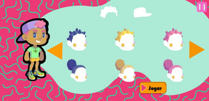
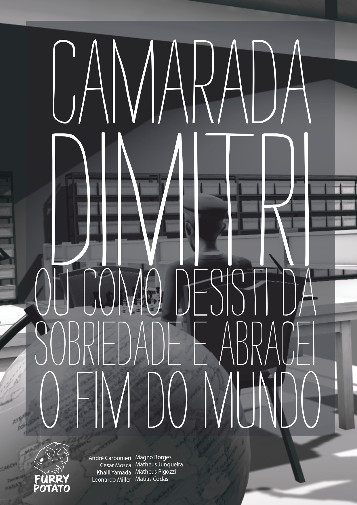
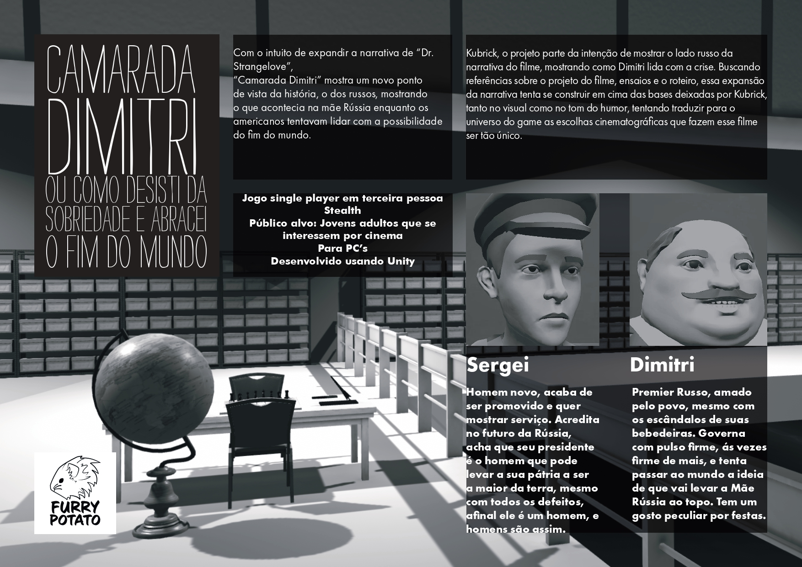
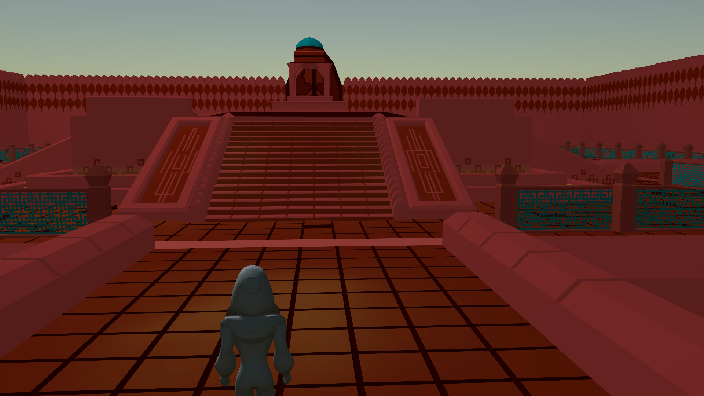
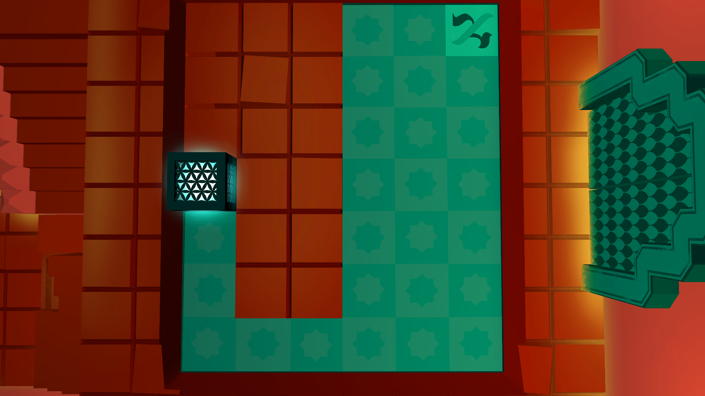

Matias Codas
Portfólio
Fiz parte da equipe de programadores na criação dos jogos abaixo, estes foram feitos no Unity para trabalhos da graduação, de estágio e para Game Jam.
Fiz parte da equipe de programadores na criação dos jogos abaixo, estes foram feitos no Unity para trabalhos da graduação, de estágio e para Game Jam.
Jogo feito na GMTK Game Jam 2020, que o tema era "Out of Control", desenvoldido durante 48h.
 Jogo feito em parceria com o curso de pedagogia, para crianças aprenderem matemática.
 Jogo em desenvolvimento para crianças, com diversos modos online competitivos, para mobile.
 Jogo feito a partir do filme "Dr. Strangelove", de Stanley Kubrick, que mostra os acontecimentos do filme da visão soviética.
 Jogo baseado na cidade abandonada de Fatehpur Sikri, onde o jogador deve resolver puzzles para descobrir o que aconteceu com a cidade.
 